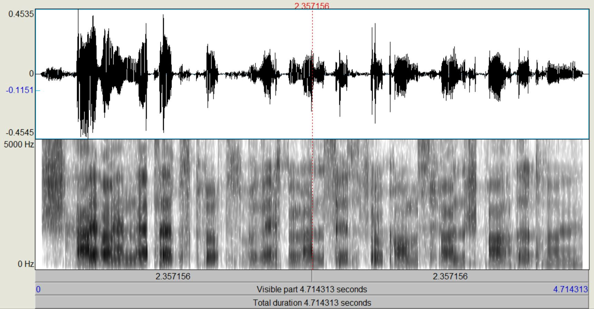

Aufgabe 4.2
Als erstes lesen wir mit [Read] in PRAAT unsere Sprachdatei ein. Dann wählen wir "Formants&LPC->To LPC (autocorrelation)". Die anderen Verfahren, die PRAAT noch anbietet, unterscheiden sich nur geringfügig in der Methode der Berechnung der Filter-Koeffizienten. Im Einstelldialog sind besonders die Punkte "Prediction Order" (Ordnung des Filters) und "Analysis width" (Framebreite bei der Analyse) von Interesse. Diese wollen wir in dieser Aufgabe variieren. Zusätzlich zu den von PRAAT angebotenen Standardwerten von Order=16/Analysis Width=25ms (kurz: 16/25) werden wir Analysen bei Ordnungen von 10, 6 und 1 durchführen, sowie Framelängen von 50 und 100 ms untersuchen. "Time step" (die "Vorschubbreite" der Analyse) setzen wir auf denselben Wert wie "Analysis width", d.h. wir erlauben kein Überlappen von benachbarten Frames. Um die verschiedenen Varianten nicht zu verwechseln, geben wir den einzelnen LPC-Objekten mit 'Rename' entsprechende Namen.
| David Original: | Marc Original: | Stefan Original: |
|---|---|---|
| David LPC Objekte: | Marc LPC Objekte: | Stefan LPC Objekte: |
| 16/25 | 16/25 | 16/25 |
| 16/50 | 16/50 | 16/50 |
| 16/100 | 16/100 | 16/100 |
| 10/25 | 10/25 | 10/25 |
| 10/50 | 10/50 | 10/50 |
| 10/100 | 10/100 | 10/100 |
| 06/25 | 06/25 | 06/25 |
| 06/50 | 06/50 | 06/50 |
| 06/100 | 06/100 | 06/100 |
| 01/25 | 01/25 | 01/25 |
| 01/50 | 01/50 | 01/50 |
| 01/100 | 01/100 | 01/100 |
Nachdem die verschiedenen LPC-Objekte kreiert wurden, führen wir zunächst eine inverse Filterung des Sprachsignals durch, mit der wir theoretisch die "Quelle" zurückgewinnen (Sound und LPC (16/25) gemeinsam anwählen, "Filter (inverse)"). Das entstehende Signal, das auch als "Residual"-Signal bezeichnet wird, betrachten wir im Edit-Fenster. Wie unterscheiden sich die Spektren vom Original, wie ist die Restverständlichkeit der ursprünglichen Sprache? (Spektrogramme von Original und Residual-Signal ins Protokoll) Nun gewinnen wir das ursprüngliche Signal wieder zurück (Rekonstruktion), indem wir das Residuum mit dem dazugehörigen LPC-Objekt (16/25) filtern (Residuum und LPC gemeinsam anwählen, "Filter", "Use LPC Gain" nicht ankreuzen!).
| David: | Marc: | Stefan: |
|---|---|---|
 |
||
| Original Residuum | Original Residuum | Original Residuum | Wave-Datei des Residuums David: | Wave-Datei des Residuums Marc: | Wave-Datei des Residuums Stefan: |
Das Residuum verliert seine Ausprägungen in den Frequenzen. Man kann erahnen, was gesagt wurde aber es wird stark übersteuert. Die Friktiven Laute wie F und S hört man hierbei besonders heraus. Des Weiteren klingt das Residuum wesentlich dumpfer und metallischer als das Original.
Aufgabe 4.3
Das Residual-Signal dient uns jetzt zum Testen der anderen LPC-Objekte mit den verschlechterten Parametern. Auch hier wählen wir das Residuum und das gewünschte LPC- Objekt an und filtern wieder. Vergleiche die Qualität der einzelnen Varianten mit dem Original! Wie unterscheiden sich die Beispiele, bei denen die Filter-Ordnung variiert wurde, wie solche, bei denen die Framebreite variiert wurde? Bei welcher Kombination ist die Sprachverständlichkeit nicht mehr akzeptabel?
| David Rekonstruktion 16/25 | Marc Rekonstruktion 16/25 | Stefan Rekonstruktion 16/25 |
|---|---|---|
| David Rekonstruktion 16/50 | Marc Rekonstruktion 16/50 | Stefan Rekonstruktion 16/50 |
| David Rekonstruktion 16/100 | Marc Rekonstruktion 16/100 | Stefan Rekonstruktion 16/100 |
|  | ||
| David Rekonstruktion 10/25 | Marc Rekonstruktion 10/25 | Stefan Rekonstruktion 10/25 |
| David Rekonstruktion 10/50 | Marc Rekonstruktion 10/50 | Stefan Rekonstruktion 10/50 |
| David Rekonstruktion 10/100 | Marc Rekonstruktion 10/100 | Stefan Rekonstruktion 10/100 |
| David Rekonstruktion 06/25 | Marc Rekonstruktion 06/25 | Stefan Rekonstruktion 06/25 |
| David Rekonstruktion 06/50 | Marc Rekonstruktion 06/50 | Stefan Rekonstruktion 06/50 |
| David Rekonstruktion 06/100 | Marc Rekonstruktion 06/100 | Stefan Rekonstruktion 06/100 |
| David Rekonstruktion 01/25 | Marc Rekonstruktion 01/25 | Stefan Rekonstruktion 01/25 |
| David Rekonstruktion 01/50 | Marc Rekonstruktion 01/50 | Stefan Rekonstruktion 01/50 |
| David Rekonstruktion 01/100 | Marc Rekonstruktion 01/100 | Stefan Rekonstruktion 01/100 |
Wenn man die Framebreite verlängert, verschwimmt die Sprache ineinander. Es klingt als würde es ein leichtes echo geben. Desweiteren verringert sich der Pegel. Am besten ist das bei Marc's Aufnahme zu beobachten. Je mehr man die Filter-Ordnung verschlechtert umso schlechter verständlich wird der Satz. Für uns ist die Sprachqualität nach einer Filter-Ordnung von 10 oder einer Framelänge von 25 nicht mehr akzeptabel, aber dass hängt von den Ansprüchen ab und wofür es verwendet werden soll. Wenn es nur darum geht die Nachricht zu übermitteln wären alle akzeptabel, für einen Anruf die eben genannten. Für ein Höhrbuch nichtmal 16/25.
Datenraten
Für die 12 Qualitäten (also Filter-Ordnungen 16, 10, 6, 1 kombiniert mit Framebreiten 25, 50 und 100ms) berechnen wir die Datenraten. Dazu machen wir uns Folgendes klar: Übertragen werden müssen mindestens je Analyseblock (also z.B. je 25ms) die Koeffizienten (Zahl entspricht der Filterordnung) und die Grundfrequenz f0. Setze hier jeweils pro Zahlenwert 16 Bit an. Vergleiche diese Datenrate mit der ursprünglichen PCM-Datenrate der Sprachdatei.
Original PCM: 16 * 16000 = 256.000 Bit/s
| 16/25: 10880 Bit/s | 16/50: 5440 Bit/s | 16/100: 2720 Bit/s |
|---|---|---|
| 10/25: 7040 Bit/s | 10/50: 3520 Bit/s | 10/100: 1760 Bit/s |
| 6/25: 4480 Bit/s | 6/50: 2240 Bit/s | 6/100: 1120 Bit/s |
| 1/25: 1280 Bit/s | 1/50: 640 Bit/s | 1/100: 320 Bit/s | Matlab-Skript zur berechnung |
Die ursprüngliche PCM-Datenrate betrug 256.000 Bit/s. Mit 16/25 unserer höchsten Datenrate haben wir nur 10.880 Bit/s, was einer 23,5 fache Verringerung entspricht.
Aufgabe 4.4
Nun wollen wir die Anregung (Quelle) verändern. Dafür habe ich zwei Signale bereitgestellt, weißes Rauschen und einen 100Hz-Pulse Train, einen obertonreiches Signal mit Grundfrequenz 100Hz. Wenn wir das Rauschen mit dem LPC-Objekt filtern (jetzt "Use LPC Gain" anwählen), bekommen wir so etwas wie Flüstersprache, beim Pulse Train eine Roboterstimme. Abschließend werden wir auch noch eine Musikdatei als Anregung benutzen, was einen Vocodereffekt bewirken sollte. Am besten eignen sich hier flächige, eher statische Sounds wie Synthesizerakkorde, da der Rhythmus vom Sprachsignal kommen soll.
| David Weißes Rauschen | Marc Weißes Rauschen | Stefan Weißes Rauschen |
|---|---|---|
| David Pulse Train | Marc Pulse Train | Stefan Pulse Train |
| David Musikdatei | Marc Musikdatei | Stefan Musikdatei |
Verwendete Whitenoise-Datei: |
Verwendete Pulse Train-Datei: |
Verwendete Musikdatei: |